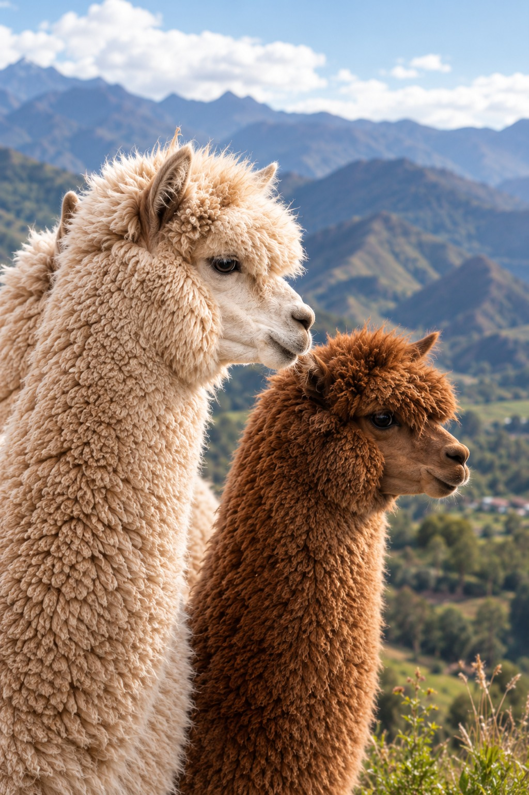
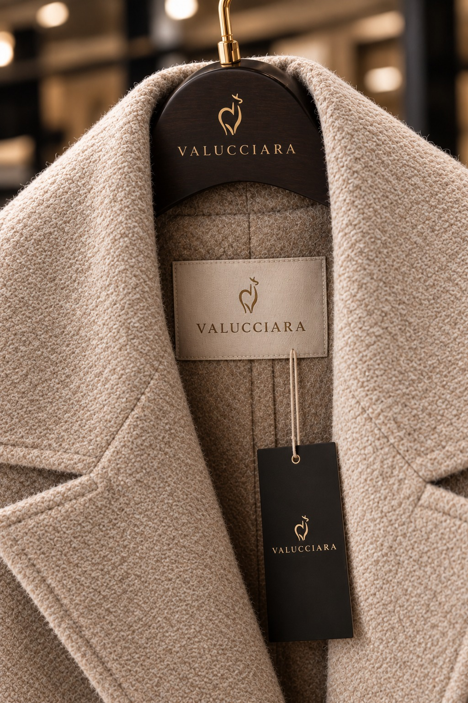

Nosotros
Veinticinco años tejiendo alpaca en Perú.
Valucciara nació en 2001 como un taller familiar en Lima que compraba fibra directamente a criadores de Puno. Hoy producimos para marcas de Europa, Norteamérica y Asia manteniendo la misma estructura: relación directa con la comunidad alpaquera, clasificación manual de la fibra y confección propia.
No tercerizamos la hechura. Cada orden pasa por el mismo equipo de tejedoras y por el mismo control de calidad, lo que nos permite garantizar consistencia de gramaje y de color entre temporadas — el punto donde la mayoría de proveedores falla.



Artesanía
Tejido a mano y en máquina rectilínea por un equipo estable de 40 personas, con acabados revisados pieza por pieza.
Sostenibilidad
Esquila responsable, teñido de bajo consumo de agua y producción bajo pedido para no generar stock muerto.
Origen peruano
Fibra, hilado y confección dentro del Perú, con documentación de trazabilidad por lote para cada orden.